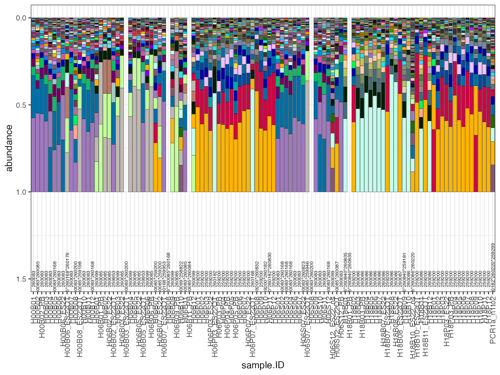

ggplotly.RmdTest ggplot with extract_seqs_long,
extract_plot_colors, extract_its2_names
library(symportalfunctions)
library(tidyverse)
#> ── Attaching core tidyverse packages ──────────────────────── tidyverse 2.0.0 ──
#> ✔ dplyr 1.1.3 ✔ readr 2.1.4
#> ✔ forcats 1.0.0 ✔ stringr 1.5.0
#> ✔ ggplot2 3.4.3 ✔ tibble 3.2.1
#> ✔ lubridate 1.9.2 ✔ tidyr 1.3.0
#> ✔ purrr 1.0.2
#> ── Conflicts ────────────────────────────────────────── tidyverse_conflicts() ──
#> ✖ dplyr::filter() masks stats::filter()
#> ✖ dplyr::lag() masks stats::lag()
#> ℹ Use the conflicted package (<http://conflicted.r-lib.org/>) to force all conflicts to become errors
library(ggridges)
plot_data <- extract_seqs_long(folder="/Users/rof011/symbiodinium/20220919T102058_esampayo", type="relative", clade="C")
colour.seqs <- extract_plot_colors("/Users/rof011/symbiodinium/20220919T102058_esampayo") # get plot colors from symportal folder, no need to every subsample
its2.type.names <- extract_its2_names("/Users/rof011/symbiodinium/20220919T102058_esampayo")
ggplot() + theme_bw() +
geom_bar(data=plot_data, aes(fill=seq.ID, y=abundance, x=sample.ID, group=abundance), color="black", linewidth=0.1,
position = position_fill(reverse = TRUE), show.legend=FALSE, stat="identity") +
theme(legend.position = "bottom", axis.text.x = element_text(angle = 90, vjust = 0.5, hjust=1)) +
scale_fill_manual(values = colour.seqs) + scale_y_reverse() +
geom_text(data=its2.type.names, aes(x=sample_name, y=1.5, label=UID),size=2, angle=90)